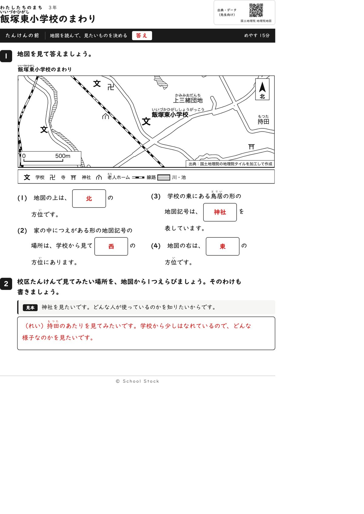
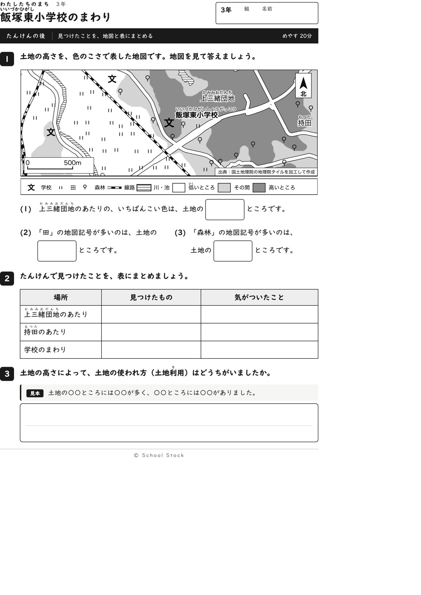
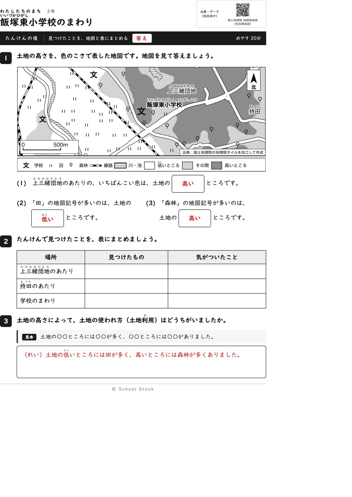
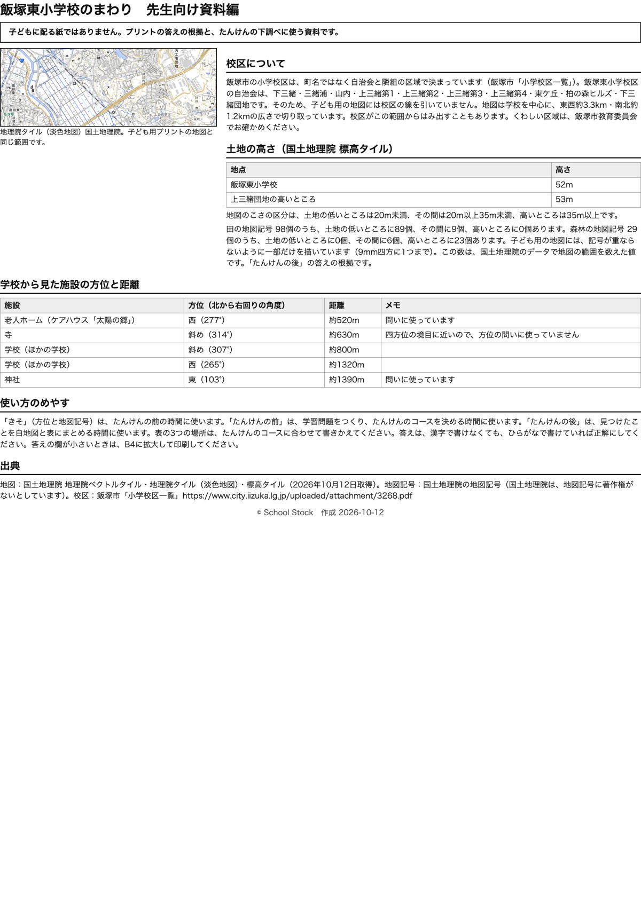

紙





直すところ
直すところはありません。
専門家団の声（いまの紙を見て）
香月八重筆頭・全学年
この紙で3年生がつかむのは、地図記号と四方位を使って学校のまわりを読むことです。老人ホームは西、神社は東と、学校の文から見て一つに決まります。斜めの寺は問いに使っていません。後の3番に見本の文型があり、言葉は指導要領にそろっています。2回目に出た直しはなく、順序もそのままでよいです。
日隈耕平社会
老人ホームは約520m西、神社は約1390m東で、資料編の表と地図が合っています。田は98個中89個が低いところ、森林は29個中23個が高いところで、答えの根拠になります。縮尺は白い地の上に載り、道路と重ならなくなりました。校名と地名の文字は白ふち付きで、記号や線と重なっていません。資料編に「記号は間引いて描いている」と書いてあり、数と地図の食い違いに先生が戸惑いません。
藤川湊すぐ終わる子
前の紙は短くてすぐ終わります。後の3番は見本の文型に言葉を入れるだけなので、1行で書けます。早く終わった子向けの一問があると静かに待てますが、これは好みの話です。
田淵さくら例がないと止まる子
前の紙は見本と例があり、安心して書き出せます。後の3番も見本の型に(2)(3)の言葉を入れれば書けます。2番の表は最初の1行の例がなく、少し迷います。好みの範囲です。
轟大和読む前に諦める子
問いは3行以内でルビもあり、図を見れば記号を探して答えられます。答えの欄も大きく、手が動きます。2番の表は空白のマスだけなので、先生に一声かけてもらえると助かります。